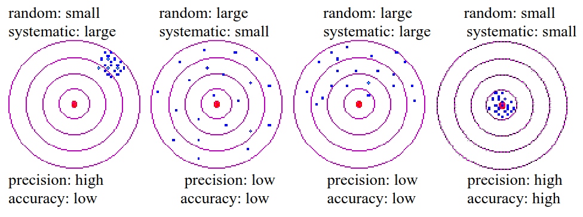

Uncertainty in simple terms from IAEA#
see https://www.iaea.org/sites/default/files/21/12/9_measurement_and_uncertainty.pdf
Measurement of physical properties is a random process#
pressure, velocity, temperature are some examples of physical properties of complex physical processes, these are random - the real value is always varying
measurement process itself is a random process
Every measurement value is a random value and all contain some unavoidable sources of uncertainty
What is measurement and what is not?#
a measurement tells us about a property of something, e.g. how heavy is an object, how hot, how long, etc. A measurement means giving a number to the property
some experiments or tests are not measurements, e.g. counting, comparing two objects, etc.
Uncertainty of measureement#
it tells something about quality of measurement
Uncertainty of measurement is the doubt that exists about the result of any measurement
In order to express uncertainty we need to provide TWO numbers:
the width of the margin of doubt, the interval
the confidence level (since everything is just random, we cannot be sure for 100%), how sure we are that the true value is within the interval
Error vs uncertainty#
error is the difference between the measured value and the true value
uncertainty is a quantification of the doubt about the measurement result
some errors we can correct, e.g. using calibration corrections, but any error whose value we do not know is a source of uncertainty
Spread of results … standard deviation (\(\sigma\))#
the standard deviation is a measure of the dispersion of randomly occuring events around a mean
standard deviation is a most typical way to quantify spread. it only gives the most typical measure of how random individual readings are spread from the average of the set.
typically, a rule of thumb 2/3 of all readings is expected to fall within \(\pm 1\sigma\) and about 95% within \(2\sigma\).
Types of errors#
Systematic errors
uncertainties in the bias of the data, such as an unknown constant offset, instrument mis-calibration
all measurements are shifted the same (though unknown) amount from the true value
we consider measurements with low systematic errors more accurate
Random errors
arise from inherent instrument limitations, such as electronic noise, mechanical friction, and from inherent complexity of the phenomena, (e.g. thermodynamics)
each measurement value fluctuates independently of previous measurements.
we consider measurements with low random error as more precise

Learn statistics#
measurement result we get is drawn from some statistical distribution. We need to know how to quantify it.
Some technical details about how to express uncertainty#
uncertainty in a scale measuring device (ruler, caliper) is equal to the smallest increment divided by 2
uncertainty in a digital measuring device is equal to the smallest increment
whatever uncertainty is expressed, add explanation and state things explicitly so no questions about uncertainty should remain unanswered. in any case, somebody will imply that there is an uncertainty and would have to take the most strict approach.
Express it always as:
where \(x_\mathrm{best}\) is the best estimate (typically an average) of the result of several measurement attempts
\(u_x\) - uncertainty in the measurement of \(x_\mathrm{best}\)
Rules for stating uncertainties#
experimental uncertainties should be stated to 1-significant figure:
\(x = 31.25 \pm 0.034953\) m/s - wrong
\( x = 3.25 \pm 0.03\) m/s
** the uncertainty is just an estimate and it cannot be more precise (i.e. more significant figures) than the best estimate of the measured value**
the last significant figure in any answer should be in the same place as the uncertainty
\( a = 1261.29 \pm 200\) cm/s\(^2\) - wrong
\( a= 1300 \pm 200\) cm/s\(^2\)
Significant figure is a reliably known digit#
because zeros are just counters for the decimal point, zeros on the left do not count
only non-zero numbers are significant (or zeros between numbers)
zeros after another digit are significant: 4.00 means that we could get 4.10, 4.01 or 3.99, 4.0 means that we could only know 3.9 or 4.1 and so on.